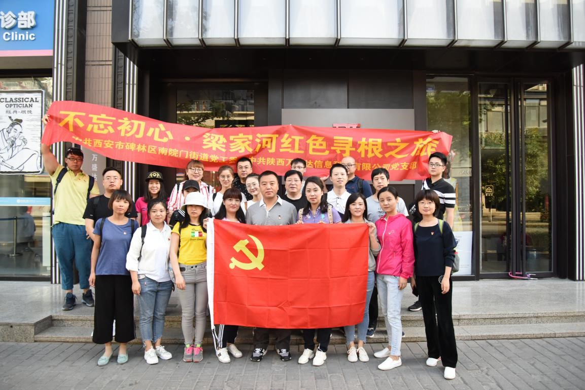
为认真学习贯彻党的十九大精神，深入推进“两学一做”学习教育常态化，6月5日至6日，陕西万盛达信息科技有限公司党支部与碑林区南院门街道党工委共同组织党员、入党积极分子及部分群众代表奔赴延安、梁家河村实地开展红色实践教育活动。陕西万盛达信息科技有限公司业务保障部总经理周丽、南院门街道党工委副书记张鹏等一行20余人参加了此次活动。
6月5日，我们到达的第一站是革命圣地延安。在延安革命纪念馆，全体人员在讲解员的带领下，通过馆内丰富的历史文献、照片、文物、半景画、场景复原和仿真雕塑等，再一次翻开小米加步枪铸就中华民族崭新辉煌的恢弘史诗，回味着一段段过往的峥嵘岁月，感受着我们党在延安自力更生、艰苦奋斗的伟大精神。
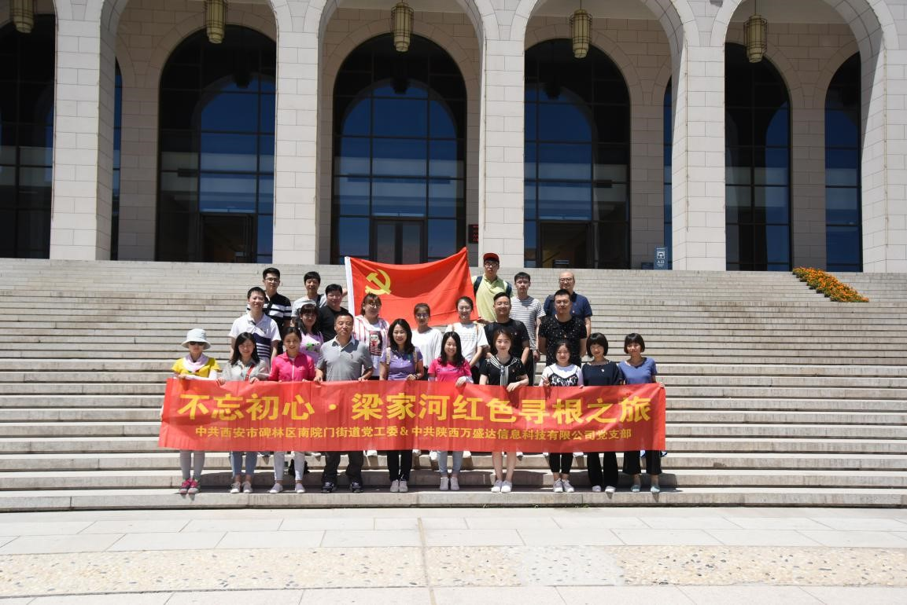
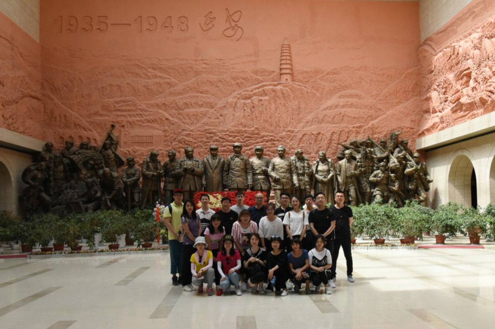
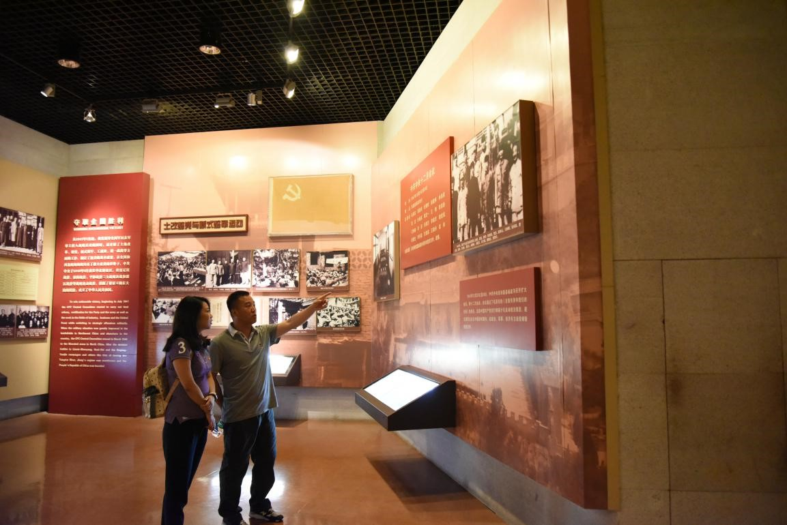
参观延安革命纪念馆
接着，我们来到了杨家岭革命旧址，参观老一辈革命家生活战斗过的地方。从外表上看，杨家岭和普通的农家小院并无区别，但这里却曾是当年党中央的中枢所在。具有伟大历史意义的中国共产党第七次全国代表大会在这里召开，著名的延安文艺座谈会在这里进行，伟大领袖毛泽东在这里会见了美国记者安娜•路易斯•斯特朗，并提出了“一切反动派都是纸老虎”这般振聋发聩的论断，为中国革命创造了一个又一个奇迹。
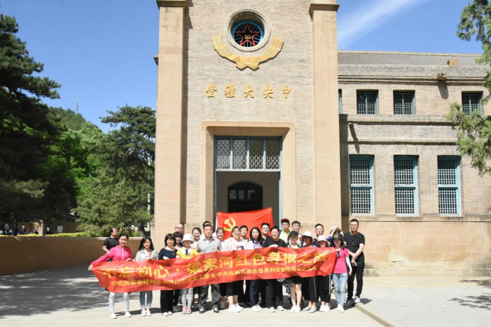
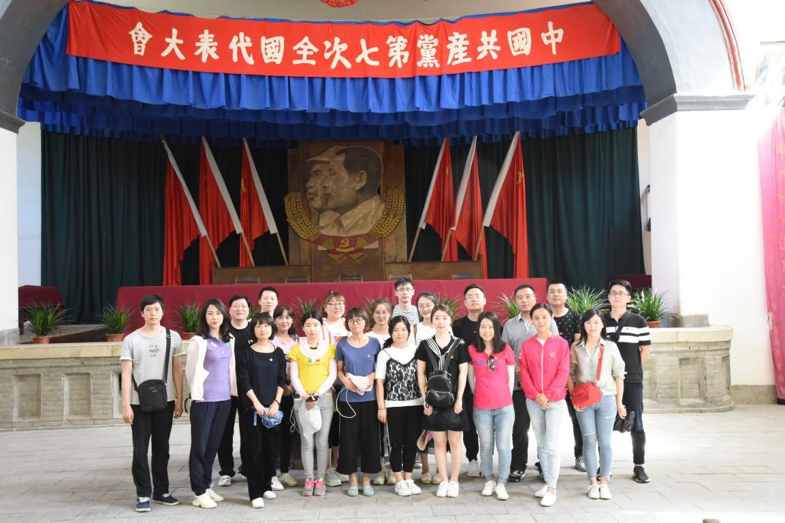
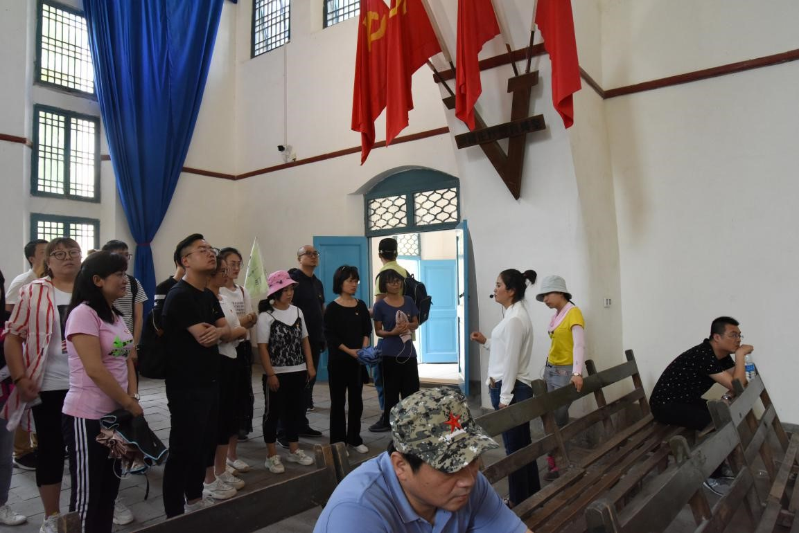
参观杨家岭革命旧址
在枣园革命旧址，我们参观了毛泽东、周恩来、刘少奇、任弼时等老一辈领导人的旧居，深刻体会到当时物资的贫乏，被老一辈革命家身上表现出的超乎一切的意志力和艰苦奋斗的革命精神所感动。
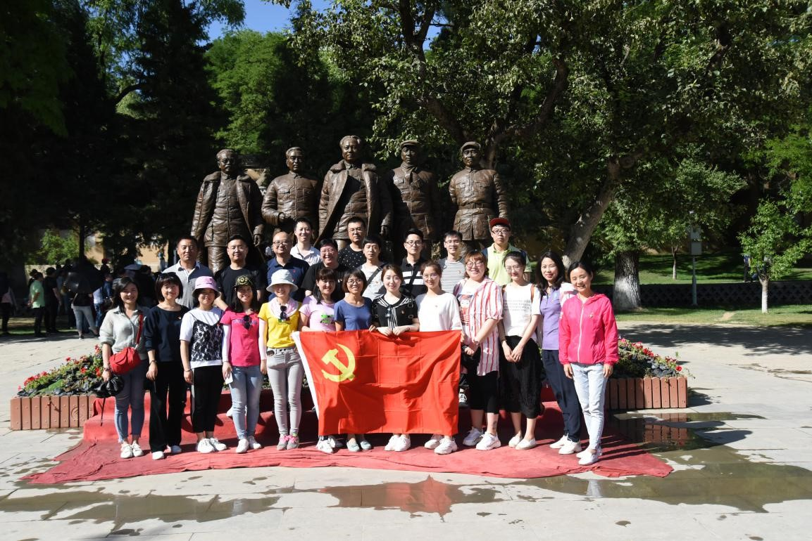
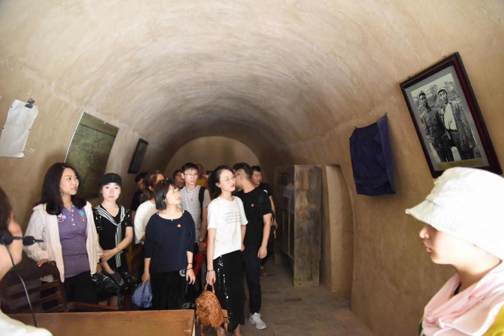
参观枣园革命旧址
革命圣地延安的参观学习让我们接受了一次不忘初心、永葆本色的“延安精神”洗礼。我们今天的形势和条件同延安时期相比发生了翻天覆地的变化，但延安精神永不过时，它在当代仍然有着伟大的现实意义，继续激励着我们振奋民族精神，光大革命传统，弘扬时代精神。
6月6日，我们来到了延川县文安驿镇梁家河村，这是习近平总书记曾经插队、担任村支书生活工作过的地方。习总书记曾说，“我人生第一步所学到的都是在梁家河。不要小看梁家河，这是有大学问的地方。”
梁家河究竟有什么大学问？我们怀着迫切的求知心参观了梁家河村史馆、知青旧居以及习总书记担任村支书时带领群众修建的陕西第一口沼气池，通过一件件实物、一幅幅老照片和讲解员饱含深情的讲述，当年习总书记带领群众战天斗地、摆脱贫困的奋斗画卷在我们面前展开，我们真切地感受到总书记当年扎根农村，与梁家河群众相濡以沫、苦干实干、锐意进取、共克时艰的奋斗历程和为民情怀。艰苦奋斗的实践生活让一位少年完成了人生中的巨大历练，走向思想成熟，这段时光奠定了其坚毅的品格。梁家河成为了一种精神，融入中华民族伟大复兴的中国梦，鼓舞着大家在西部这片热土上，创造属于自己的故事。
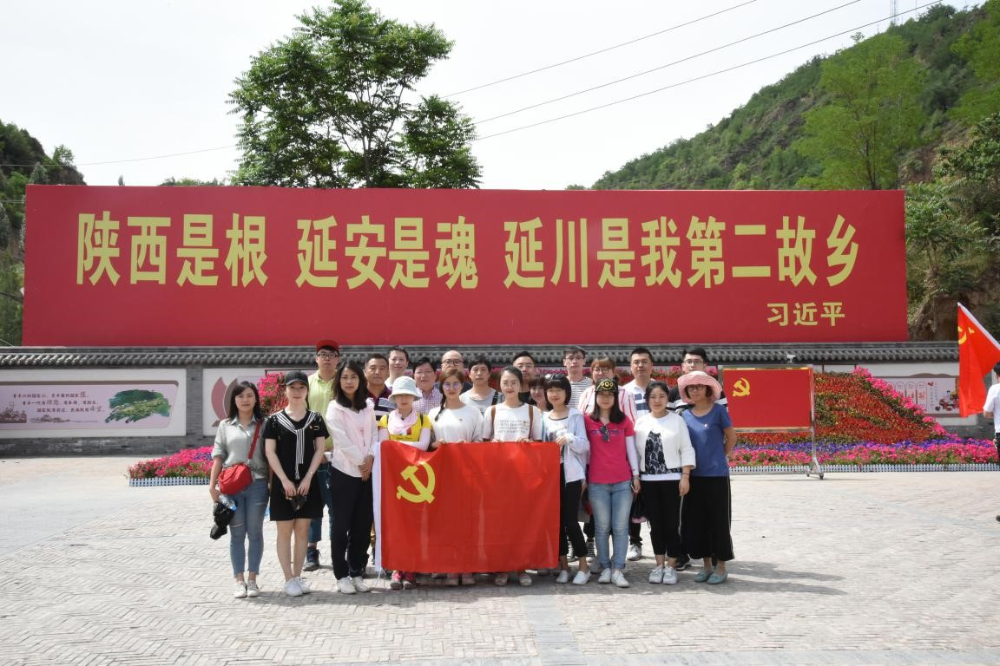
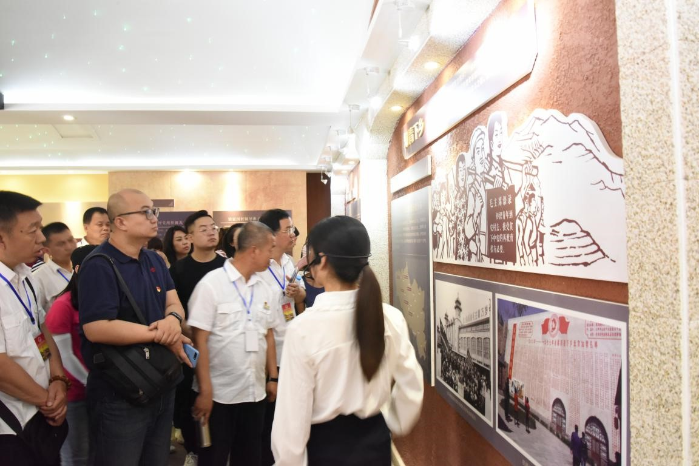
参观梁家河村
延安、梁家河之行，是一堂生动的党课，更是一堂丰富的哲学课、人生课。延安精神、梁家河精神交融混响，迸发出的火花照亮我们凝心聚气、砥砺奋进的道路，激励我们在新的历史征程中，留下新的印记、新的辉煌。